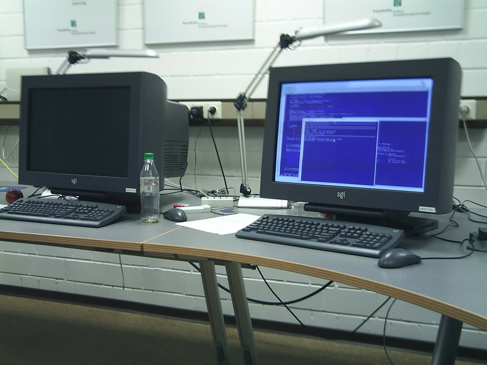
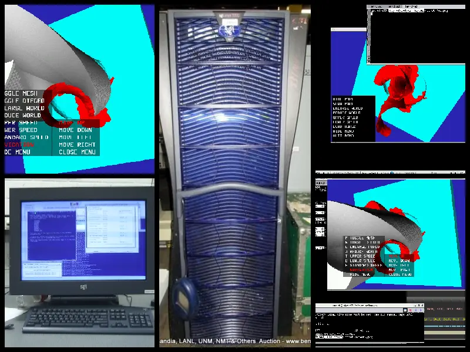
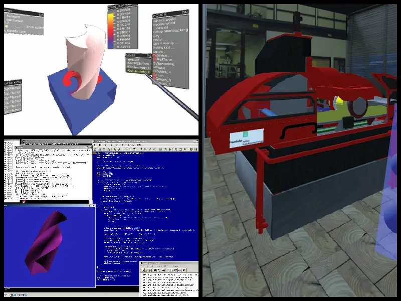

4 400 MHZ IP35 Processors CPU: MIPS R12000 Processor Chip Revision: 3.5 FPU: MIPS R12010 Floating Point Chip Revision: 3.5 Main memory size: 4096 Mbytes Instruction cache size: 32 Kbytes Data cache size: 32 Kbytes Secondary unified instruction/data cache size: 8 Mbytes Integral SCSI controller 8: Version Fibre Channel QL2200A Integral SCSI controller 6: Version QL12160, single ended Integral SCSI controller 7: Version QL12160, low voltage differential Integral SCSI controller 9: Version IEEE1394 SBP2 IEEE1394 CDROM: node 1010031001a454 port 0 on SCSI controller 9 Integral SCSI controller 0: Version Fibre Channel QL2200A Disk drive: unit 1 on SpCSI controller 0 Disk drive: unit 2 on SCSI controller 0 Integral SCSI controller 5: Version IEEE1394 SBP2 IEEE1394 CDROM: node 1010031001c080 port 0 on SCSI controller 5 IOC3 serial port: tty3 IOC3 serial port: tty4 IOC3 serial port: tty10 IOC3 serial port: tty11 IOC3 serial port: tty12 IOC3 serial port: tty5 IOC3 serial port: tty6 IOC3 serial port: tty7 IOC3 serial port: tty8 IOC3 serial port: tty9 Graphics board: InfiniteReality3 Graphics board: InfiniteReality3 Gigabit Ethernet: eg0, module 001c04, pci_bus 2, pci_slot 2, firmware version 12.4.10 Fast Ethernet: ef1, version 1, module 001c07, pci 4 Integral Fast Ethernet: ef0, version 1, module 001c04, pci 4 Iris Audio Processor: version RAD revision 13.0, number 1 IOC3 external interrupts: 2 IOC3 external interrupts: 1 IEEE 1394 High performance serial bus controller 0: Type: OHCI, Version 0 0 IEEE 1394 High performance serial bus controller 1: Type: OHCI, Version 0 0 USB controller: type OHCI USB Human Interface Device: device id 1 type keyboard USB Human Interface Device: device id 1 type mouse USB controller: type OHCI USB Human Interface Device: device id 0 type keyboard USB Human Interface Device: device id 0 type mouse

